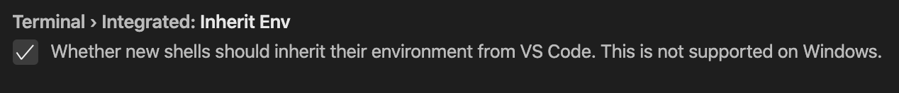
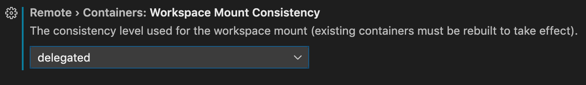
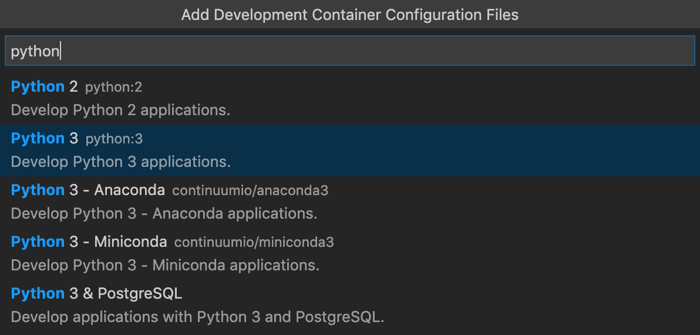

Advanced Container Configuration
This article includes advanced setup scenarios for the Visual Studio Code Remote - Containers extension. See the Developing inside a Container article for additional information.
Adding environment variables
You can set environment variables in your container without altering the container image by using one of the options below. However, you should verify Terminal > Integrated: Inherit Env is checked in settings or the variables you set may not appear in the Integrated Terminal.

Option 1: Add individual variables
Depending on what you reference in devcontainer.json:
Dockerfile or image: Add the
containerEnvproperty todevcontainer.jsonto set variables that should apply to the entire container orremoteEnvto set variables for VS Code and related sub-processes (terminals, tasks, debugging, etc.):"containerEnv": { "MY_CONTAINER_VAR": "some-value-here", "MY_CONTAINER_VAR2": "${localEnv:SOME_LOCAL_VAR}" }, "remoteEnv": { "PATH": "${containerEnv:PATH}:/some/other/path", "MY_REMOTE_VARIABLE": "some-other-value-here", "MY_REMOTE_VARIABLE2": "${localEnv:SOME_LOCAL_VAR}" }As this example illustrates,
containerEnvcan reference local variables andremoteEnvcan reference both local and existing container variables.Docker Compose: Since Docker Compose has built-in support for updating container-wide variables, only
remoteEnvis supported indevcontainer.json:"remoteEnv": { "PATH": "${containerEnv:PATH}:/some/other/path", "MY_REMOTE_VARIABLE": "some-other-value-here", "MY_REMOTE_VARIABLE2": "${localEnv:SOME_LOCAL_VAR}" }As this example illustrates,
remoteEnvcan reference both local and existing container variables.To update variables that apply to the entire container, update (or extend) your
docker-compose.ymlwith the following for the appropriate service:version: '3' services: your-service-name-here: environment: - YOUR_ENV_VAR_NAME=your-value-goes-here - ANOTHER_VAR=another-value # ...
If you've already built the container and connected to it, run Remote-Containers: Rebuild Container from the Command Palette (kbstyle(F1)) to pick up the change. Otherwise run Remote-Containers: Open Folder in Container... to connect to the container.
Option 2: Use an env file
If you have a large number of environment variables that you need to set, you can use a .env file instead. VS Code will automatically pick up a file called .env in your workspace root, but you can also create one in another location.
First, create an environment file somewhere in your source tree. Consider this .devcontainer/devcontainer.env file:
YOUR_ENV_VAR_NAME=your-value-goes-here
ANOTHER_ENV_VAR_NAME=your-value-goes-here
Next, depending on what you reference in devcontainer.json:
Dockerfile or image: Edit
devcontainer.jsonand add a path to thedevcontainer.env:"runArgs": ["--env-file",".devcontainer/devcontainer.env"]Docker Compose: Edit
docker-compose.ymland add a path to thedevcontainer.envfile relative to the Docker Compose file:version: '3' services: your-service-name-here: env_file: devcontainer.env # ...
If you've already built the container and connected to it, run Remote-Containers: Rebuild Container from the Command Palette (kbstyle(F1)) to pick up the change. Otherwise run Remote-Containers: Open Folder in Container... to connect to the container.
Starting a process when the container starts
When you are working in a development container, you may want to execute a command or start something each time the container starts. The easiest way to do this is using the postStartCommand property in devcontainer.json. For example, if you wanted to run yarn install every time you connected to the container to keep dependencies up to date, you could add the following:
"postStartCommand": "yarn install"
In other cases, you may want to start up a process and leave it running. This can be accomplished by using nohup and putting the process into the background using &. For example:
"postStartCommand": "nohup bash -c 'your-command-here &'"
Those familiar with Linux may expect to be able to use the systemctl command to start and stop background services managed by something called systemd. Unfortunately, systemd has overhead and is generally not used in containers as a result.
In many cases, there is a command you can run instead (for example, sshd). And on Debian/Ubuntu, there are often scripts under /etc/init.d that you can run directly.
"postStartCommand": "/etc/init.d/ssh start"
These systems also include a service command that will use systemctl or /etc/init.d scripts based on what is installed.
"postStartCommand": "service ssh start"
Adding startup commands to the Docker image instead
While postStartCommand is convenient and allows you to execute commands in your source tree, you can also add these steps instead to a Dockerfile using a custom ENTRYPOINT or CMD.
When referencing a Dockerfile in devcontainer.json, the default entrypoint and command is overridden. First, disable this behavior using the overrrideCommand property.
"overrideCommand": false
The overrideCommand property defaults to true because many images will immediately exit if a command is not specified. Instead, we will need to handle this in our Dockerfile.
Next, consider this Dockerfile:
FROM mcr.microsoft.com/vscode/devcontainers/base:0-focal
COPY docker-entrypoint.sh /
RUN chmod +x /docker-entrypoint.sh
ENTRYPOINT [ "/docker-entrypoint.sh" ]
CMD [ "sleep", "infinity"' ]
The CMD here makes sure the container stays running by default. Keeping your startup steps in the ENTRYPOINT allows you to safely override the command when using docker run with your image or using Docker Compose. This resolves to the following:
/docker-entrypoint.sh sleep infinity
Next, create a docker-entrypoint.sh script:
#!/usr/env bash
echo "Hello from our entrypoint!"
exec "$@"
Anything you execute in this file will then fire each time the container starts. However, it's important to include the last exec "$@" line since this is what will cause the command sleep infinity in our example to fire.
Finally, if you are using Docker Compose, be sure that neither the entrypoint nor command properties are set for your container.
That's it!
Adding another local file mount
Note: Mounting the local file system is not supported in GitHub Codespaces. See developing inside a container on a remote Docker host for information on mounting remote folders in this scenario.
You can add a volume bound to any local folder by using the following appropriate steps, based on what you reference in devcontainer.json:
Dockerfile or image: Add the following to the
mountsproperty (VS Code 1.41+) in this same file:"mounts": [ "source=/local/source/path/goes/here,target=/target/path/in/container/goes/here,type=bind,consistency=cached" ]You can also reference local environment variables or the local path of the workspace. For example, this will bind mount
~($HOME) on macOS/Linux and the user's folder (%USERPROFILE%) on Windows and a sub-folder in the workspace to a different location:"mounts": [ "source=${localEnv:HOME}${localEnv:USERPROFILE},target=/host-home-folder,type=bind,consistency=cached", "source=${localWorkspaceFolder}/app-data,target=/data,type=bind,consistency=cached" ]Docker Compose: Update (or extend) your
docker-compose.ymlwith the following for the appropriate service:version: '3' services: your-service-name-here: volumes: - /local/source/path/goes/here:/target/path/in/container/goes/here:cached - ~:/host-home-folder:cached - ./data-subfolder:/data:cached # ...
If you've already built the container and connected to it, run Remote-Containers: Rebuild Container from the Command Palette (kbstyle(F1)) to pick up the change. Otherwise run Remote-Containers: Open Folder in Container... to connect to the container.
Persist bash history between runs
You can also use a mount to persist your bash command history across sessions / container rebuilds.
First, update your Dockerfile so that each time a command is used in bash, the history is updated and stored in a location we will persist.
If you have a root user, update your Dockerfile with the following:
RUN SNIPPET="export PROMPT_COMMAND='history -a' && export HISTFILE=/commandhistory/.bash_history" \
&& echo $SNIPPET >> "/root/.bashrc"
If you have a non-root user, update your Dockerfile with the following. Replace user-name-goes-here with the name of a non-root user in the container.
ARG USERNAME=user-name-goes-here
RUN SNIPPET="export PROMPT_COMMAND='history -a' && export HISTFILE=/commandhistory/.bash_history" \
&& mkdir /commandhistory \
&& touch /commandhistory/.bash_history \
&& chown -R $USERNAME /commandhistory \
&& echo $SNIPPET >> "/home/$USERNAME/.bashrc"
Next, add a local volume to store the command history. This step varies depending on whether or not you are using Docker Compose.
Dockerfile or image: Use the
mountsproperty (VS Code 1.41+) in yourdevcontainer.jsonfile."mounts": [ "source=projectname-bashhistory,target=/commandhistory,type=volume" ]Docker Compose: Update (or extend) your
docker-compose.ymlwith the following for the appropriate service.version: '3' services: your-service-name-here: volumes: - projectname-bashhistory:/commandhistory # ... volumes: projectname-bashhistory:
Finally, if you've already built the container and connected to it, run Remote-Containers: Rebuild Container from the Command Palette (kbstyle(F1)) to pick up the change. Otherwise run Remote-Containers: Open Folder in Container... to connect to the container.
Changing the default source code mount
If you add the image or dockerFile properties to devcontainer.json, VS Code will automatically "bind" mount your current workspace folder into the container. If git is present on the host's PATH and the folder containing .devcontainer/devcontainer.json is within a git repository, the current workspace mounted will be the root of the repository. If git is not present on the host's PATH, the current workspace mounted will be the folder containing .devcontainer/devcontainer.json.
While this is convenient, you may want to change mount settings, alter the type of mount, location, or run in a remote container.
You can use the workspaceMount property in devcontainer.json to change the automatic mounting behavior. It expects the same value as the Docker CLI --mount flag.
For example:
"workspaceMount": "source=${localWorkspaceFolder}/sub-folder,target=/workspace,type=bind,consistency=delegated",
"workspaceFolder": "/workspace"
This also allows you to do something like a named volume mount instead of a bind mount, which can be useful particularly when using a remote Docker Host or you want to store your entire source tree in a volume.
If you've already built the container and connected to it, run Remote-Containers: Rebuild Container from the Command Palette (kbstyle(F1)) to pick up the change. Otherwise run Remote-Containers: Open Folder in Container... to connect to the container.
Improving container disk performance
The Remote - Containers extension uses "bind mounts" to source code in your local filesystem by default. While this is the simplest option, on macOS and Windows, you may encounter slower disk performance when running commands like yarn install from inside the container. There are few things you can do to resolve these type of issues.
Store your source code in the WSL 2 filesystem on Windows
Windows 10 2004 and up includes an improved version of the Windows Subsystem for Linux (WSL 2) that provides a full Linux kernel and has significantly improved performance over WSL 1. Docker Desktop 2.3+ includes a new WSL 2 Engine that runs Docker in WSL rather than in a VM. Therefore, if you store your source code in the WSL 2 filesystem, you will see improved performance along with better compatibility for things like setting permissions.
See Open a WSL 2 folder in a container on Windows for details on using this new engine from VS Code.
Update the mount consistency to 'delegated' for macOS
By default, the Remote - Containers extension uses the Docker cached mount consistency on macOS since this provides a good mix between performance and write guarantees on the host OS. However, you can opt to use the delegated consistency instead if you do not expect to be writing to the same file in both locations very often.
When using a Dockerfile or image, update the Remote > Containers: Workspace Mount Consistency property in settings to delegated:

When using Docker Compose, update your local bind mount in docker-compose.yml as follows:
volumes:
# Update this to wherever you want VS Code to mount the folder of your project
- .:/workspace:delegated
If you've already built the container and connected to it, run Remote-Containers: Rebuild Container from the Command Palette (kbstyle(F1)) to pick up the change. Otherwise run Remote-Containers: Open Folder in Container... to connect to the container.
Use Clone Repository in Container Volume
The Remote-Containers: Clone Repository in Container Volume... command uses an isolated, local Docker named volume instead binding to the local filesystem. In addition to not polluting your file tree, local volumes have the added benefit of improved performance on Windows and macOS.
See Open a Git repository or GitHub PR in an isolated container volume for details on using this approach.
The next two sections will outline how to use a named volume in other scenarios.
Use a targeted named volume
Since macOS and Windows run containers in a VM, "bind" mounts are not as fast as using the container's filesystem directly. Fortunately, Docker has the concept of a local "named volume" that can act like the container's filesystem but survives container rebuilds. This makes it ideal for storing package folders like node_modules, data folders, or output folders like build where write performance is critical. Follow the appropriate steps below based on what you reference in devcontainer.json.
Dockerfile or image:
Let's use the vscode-remote-try-node repository to illustrate how to speed up yarn install.
Follow these steps:
Use the
workspaceMountproperty indevcontainer.jsonto tell VS Code where to bind your source code. Then use themountsproperty (VS Code 1.41+) to mount thenode_modulessub-folder into a named local volume instead."mounts": [ "source=try-node-node_modules,target=${containerWorkspaceFolder}/node_modules,type=volume" ]Since this repository runs VS Code as the non-root "node" user, we need to add a
postCreateCommandto be sure the user can access the folder."remoteUser": "node", "mounts": [ "source=try-node-node_modules,target=${containerWorkspaceFolder}/node_modules,type=volume" ], "postCreateCommand": "sudo chown node node_modules"This second step is not required if you will be running in the container as
root.
If you've already built the container and connected to it, run Remote-Containers: Rebuild Container from the Command Palette (kbstyle(F1)) to pick up the change. Otherwise run Remote-Containers: Open Folder in Container... to connect to the container.
Two notes on this approach:
If you delete the
node_modulesfolder in the container, it may lose the connection to the volume. Delete the contents of thenode_modulesfolder instead when needed (rm -rf node_modules/* node_modules/.*).You'll find that an empty
node_modulesfolder gets created locally with this method. This is because the volume mount point in the container is inside the local filesystem bind mount. This is expected and harmless.
Docker Compose:
While vscode-remote-try-node does not use Docker Compose, the steps are similar, but the volume mount configuration is placed in a different file.
In your Docker Compose file (or an extended one), add a named local volume mount to the
node_modulessub-folder for the appropriate service(s). For example:version: '3' services: your-service-name-here: volumes: # Or wherever you've mounted your source code - .:/workspace:cached - try-node-node_modules:/workspace/node_modules # ... volumes: try-node-node_modules:Next, be sure the
workspaceFolderproperty indevcontainer.jsonmatches the place your actual source code is mounted:"workspaceFolder": "/workspace"If you're running in the container with a user other than root, add a
postCreateCommandto update the owner of the folder you mount since it may have been mounted as root. Replaceuser-name-goes-herewith the appropriate user."remoteUser": "node", "workspaceFolder": "/workspace", "postCreateCommand": "sudo chown user-name-goes-here node_modules"
If you've already built the container and connected to it, run Remote-Containers: Rebuild Container from the Command Palette (kbstyle(F1)) to pick up the change. Otherwise run Remote-Containers: Open Folder in Container... to connect to the container.
Use a named volume for your entire source tree
Finally, if none of the above options meet your needs, you can go one step further and clone your entire source tree inside of a named volume rather than locally. You can set up a named volume by taking an existing devcontainer.json configuration and modifying it as follows (updating your-volume-name-here with whatever you want to call the volume).
Depending on what you reference in devcontainer.json:
Dockerfile or image: Use the following properties in
devcontainer.jsonto mount a local named volume into the container:"workspaceMount": "source=your-volume-name-here,target=/workspace,type=volume" "workspaceFolder": "/workspace",Docker Compose: Update (or extend) your
docker-compose.ymlwith the following for the appropriate service(s):version: '3' services: your-service-name-here: volumes: - your-volume-name-here:/workspace # ... volumes: your-volume-name-here:You'll also want to be sure the
workspaceFolderproperty indevcontainer.jsonmatches the place the volume is mounted (or a sub-folder inside the volume):"workspaceFolder": "/workspace"
If you've already built the container and connected to it, run Remote-Containers: Rebuild Container from the Command Palette (kbstyle(F1)) to pick up the change. Otherwise run Remote-Containers: Open Folder in Container... to connect to the container.
Next, either use the Git: Clone command from the Command Palette or start an integrated terminal (kb(workbench.action.terminal.new)) and use the git clone command to clone your source code into the /workspace folder.
Finally, use the File > Open... / Open Folder... command to open the cloned repository in the container.
Avoiding extension reinstalls on container rebuild
By default, VS Code will install extensions and VS Code Server inside the container's filesystem. While this has performance benefits over a locally mounted filesystem, the disadvantage is that VS Code will have to reinstall them on a container rebuild. If you find yourself rebuilding frequently, you can use a local "named volume" mount so that the extensions and VS Code Server survive a container rebuild.
There are a two side effects of doing this you should be aware of:
- Deleting the container will not automatically delete the named volume.
- Sharing the volume across multiple containers can have unintended consequences, so to be safe we will pick a unique name for each.
To create the named local volume, follow these steps:
If you are running as a non-root user, you'll need to ensure your Dockerfile creates
~/.vscode-server/extensionsand/or~/.vscode-server-insiders/extensionsin the container with this non-root user as the owner. If you do not do this, the folder will be owned by root and your connection will fail with a permissions issue. See Adding a non-root user to your dev container for full details, but you can use this snippet in your Dockerfile to create the folders. Replaceuser-name-goes-herewith the actual user name:ARG USERNAME=user-name-goes-here RUN mkdir -p /home/$USERNAME/.vscode-server/extensions \ /home/$USERNAME/.vscode-server-insiders/extensions \ && chown -R $USERNAME \ /home/$USERNAME/.vscode-server \ /home/$USERNAME/.vscode-server-insidersNext, we'll configure a named volume mount for
~/.vscode-server/extensionsand~/.vscode-server-insiders/extensionsin the container. The configuration will depend on whether you specify an image, Dockerfile, or Docker Compose file in yourdevcontainer.jsonfile.Dockerfile or image:
Add the following to
devcontainer.json, replacing/rootwith the home directory in the container if not root (for example/home/user-name-goes-here) andunique-vol-name-herewith a unique name for the volume:"mounts": [ "source=unique-vol-name-here,target=/root/.vscode-server/extensions,type=volume", // And/or for VS Code Insiders "source=unique-vol-name-here-insiders,target=/root/.vscode-server-insiders/extensions,type=volume", ]Docker Compose:
Update (or extend) your
docker-compose.ymlwith the following for the appropriate service. Replacing/rootwith the home directory in the container if not root (for example/home/user-name-goes-here) andunique-vol-name-herewith a unique name for the volume.services: your-service-name-here: volumes: - unique-vol-name-here:/root/.vscode-server/extensions # And/or for VS Code Insiders - unique-vol-name-here-insiders:/root/.vscode-server-insiders/extensions # ... volumes: unique-vol-name-here: unique-vol-name-here-insiders:Finally, if you've already built the container and connected to it, you'll need to run Remote-Containers: Rebuild Container from the Command Palette (
kbstyle(F1)) to pick up the change. Otherwise run Remote-Containers: Reopen Folder in Container to connect to the container for the first time.
After the container is up and running, subsequent rebuilds will not reacquire any extensions or the VS Code server. The build will also not use the latest extensions list from devcontainer.json.
However, if you want to completely reset, you can delete the volume and everything will be reinstalled on restart.
docker volume rm unique-vol-name-here
Adding a non-root user to your dev container
Many Docker images use root as the default user, but there are cases where you may prefer to use a non-root user instead. If you do so, there are some quirks with local filesystem (bind) mounts that you should know about. Specifically:
Docker Desktop for Mac: Inside the container, any mounted files/folders will act as if they are owned by the container user you specify. Locally, all filesystem operations will use the permissions of your local user instead.
Docker Desktop for Windows: Inside the container, any mounted files/folders will appear as if they are owned by
rootbut the user you specify will still be able to read/write them and all files will be executable. Locally, all filesystem operations will use the permissions of your local user instead. This is because there is fundamentally no way to directly map Windows-style file permissions to Linux.Docker CE/EE on Linux: Inside the container, any mounted files/folders will have the exact same permissions as outside the container - including the owner user ID (UID) and group ID (GID). Because of this, your container user will either need to have the same UID or be in a group with the same GID. The actual name of the user / group does not matter. The first user on a machine typically gets a UID of 1000, so most containers use this as the ID of the user to try to avoid this problem.
Specifying a user for VS Code
If the image or Dockerfile you are using already provides an optional non-root user (like the node image) but still defaults to root, you can opt into having VS Code (server) and any sub-processes (terminals, tasks, debugging) use it by specifying the remoteUser property in devcontainer.json:
"remoteUser": "user-name-goes-here"
On Linux, if you are referencing a Dockerfile or image in devcontainer.json, this will also automatically update the container user's UID/GID to match your local user to avoid the bind mount permissions problem that exists in this environment (unless you set "updateRemoteUserUID": false). In the Docker Compose case, the container user's UID/GID will not be updated but you can manually change these values in a Dockerfile.
Since this setting only affects VS Code and related sub-processes, VS Code needs to be restarted (or the window reloaded) for it to take effect. However, UID/GID updates are only applied when the container is created and requires a rebuild to change.
Specifying the default container user
In some cases, you may need all processes in the container to run as a different user (for example, due to startup requirements) rather than just VS Code. How you do this varies slightly depending on whether or not you are using Docker Compose.
Dockerfile and image: Add the
containerUserproperty to this same file."containerUser": "user-name-goes-here"On Linux, like
remoteUser, this will also automatically update the container user's UID/GID to match your local user to avoid the bind mount permissions problem that exists in this environment (unless you set"updateRemoteUserUID": false).Docker Compose: Update (or extend) your
docker-compose.ymlwith the following for the appropriate service:user: user-name-or-UID-goes-here
Creating a non-root user
While any images or Dockerfiles that come from the Remote - Containers extension will include a non-root user with a UID/GID of 1000 (typically either called vscode or node), many base images and Dockerfiles do not. Fortunately, you can update or create a Dockerfile that adds a non-root user into your container.
Running your application as a non-root user is recommended even in production (since it is more secure), so this is a good idea even if you're reusing an existing Dockerfile. For example, this snippet for a Debian/Ubuntu container will create a user called user-name-goes-here, give it the ability to use sudo, and set it as the default:
ARG USERNAME=user-name-goes-here
ARG USER_UID=1000
ARG USER_GID=$USER_UID
# Create the user
RUN groupadd --gid $USER_GID $USERNAME \
&& useradd --uid $USER_UID --gid $USER_GID -m $USERNAME \
#
# [Optional] Add sudo support. Omit if you don't need to install software after connecting.
&& apt-get update \
&& apt-get install -y sudo \
&& echo $USERNAME ALL=\(root\) NOPASSWD:ALL > /etc/sudoers.d/$USERNAME \
&& chmod 0440 /etc/sudoers.d/$USERNAME
# ********************************************************
# * Anything else you want to do like clean up goes here *
# ********************************************************
# [Optional] Set the default user. Omit if you want to keep the default as root.
USER $USERNAME
Tip: If you hit an error when building about the GID or UID already existing, the image you selected likely already has a non-root user you can take advantage of directly.
In either case, if you've already built the container and connected to it, run Remote-Containers: Rebuild Container from the Command Palette (kbstyle(F1)) to pick up the change. Otherwise run Remote-Containers: Open Folder in Container... to connect to the container.
Change the UID/GID of an existing container user
While the remoteUser property tries to automatically update the UID/GID as appropriate on Linux when using a Dockerfile or image, you can use this snippet in your Dockerfile to manually change the UID/GID of a user instead. Update the ARG values as appropriate.
ARG USERNAME=user-name-goes-here
ARG USER_UID=1000
ARG USER_GID=$USER_UID
RUN groupmod --gid $USER_GID $USERNAME \
&& usermod --uid $USER_UID --gid $USER_GID $USERNAME \
&& chown -R $USER_UID:$USER_GID /home/$USERNAME
Note that on Alpine Linux, you'll need to install the shadow package first.
RUN apk add --no-cache shadow
Setting the project name for Docker Compose
VS Code will respect the value of the COMPOSE_PROJECT_NAME environment variable if set for the VS Code process or in a .env file in the root of the project.
For example, after shutting down all VS Code windows, you can start VS Code from the command line as follows:
# from bash
COMPOSE_PROJECT_NAME=foo code .
# from PowerShell
$env:COMPOSE_PROJECT_NAME=foo
code .
Or add the following to a .env file in the root of the project (not in the .devcontainer folder):
COMPOSE_PROJECT_NAME=foo
Using Docker or Kubernetes from a container
While you can build, deploy, and debug your application inside a dev container, you may also need to test it by running it inside a set of production-like containers. Fortunately, by installing the needed Docker or Kubernetes CLIs and mounting your local Docker socket, you can build and deploy your app's container images from inside your dev container.
Once the needed CLIs are in place, you can also work with the appropriate container cluster using the Docker extension or the Kubernetes extension.
See the following example dev container definitions for additional information on a specific scenario:
Running Docker or Minikube in a development container
Docker-in-Docker - Illustrates how to run Docker (or Moby) entirely inside a container. Provides support for bind mounting all folders inside the development container, but cannot reuse your local machine's cache.
Kubernetes - Minikube-in-Docker - Illustrates how to run Minikube entirely inside a container with similar benefits and limitations as Docker-in-Docker.
Accessing an existing Docker or Minikube instance from a container
Docker-from-Docker - Also known as "Docker-outside-of-Docker", this illustrates how you can use the Docker (or Moby) CLI in your dev container to connect to your host's Docker daemon by bind mounting the Docker Unix socket. Lower overhead and can reuse your machine's cache, but has bind mounting limitations.
Docker-from-Docker Compose - Variation of Docker-from-Docker for situations where you are using Docker Compose instead of a single Dockerfile.
Kubernetes - Local Configuration - Takes the Docker-from-Docker model and adds kubectl and Helm to illustrate how you can access a local Minikube or Docker provided Kubernetes cluster.
There is also documentation on the Docker-in-Docker, Docker-from-Docker, and Kubernetes install scripts that you can reuse and are referenced by the samples above.
Mounting host volumes with Docker from inside a container
When following the Docker-in-Docker model, using the Docker CLI from inside a dev container will cause it to interact with a Docker daemon running in the same place. This means that you can "bind" mount anything inside the dev container into the "inner" containers you create.
For example, this will "just work":
docker run -v /workspace/examplefile.txt:/incontainer/path debian
However, if you want to bind mount a host folder available into this inner container, you need to mount it into your dev container first.
With Docker-from-Docker, the type of bind mounting that works by default is reversed. Here, the Docker CLI inside the container interacts with the host's Docker daemon instead. This affects mounting directories from inside the container as the path inside the container may not match the path of the directory on the host.
The same example above will fail since the path on the host, outside the container isn't /workspace/.... In addition, some folders simply cannot be mounted because they only exist in the container. If you need to do this, you may find the Docker-in-Docker model fits your needs better.
If you are opening a folder in a container, you can pass the host directory into the container as an environment variable to allow you to mount the workspace folder. (This does not, however, work if you used a volume - Docker-in-Docker is the best choice there.) To do so, add the following to devcontainer.json:
"remoteEnv": {
// Pass in the host directory for Docker mount commands from inside the container
"HOST_PROJECT_PATH": "${localWorkspaceFolder}"
}
The example below is from a makefile and mounts the KUBECONFIG file from the development container into the new Docker container it starts:
docker run -p 8089:8089 -p 9090:9090 -v $(shell echo ${KUBECONFIG} | sed s#/workspace#${HOST_PROJECT_PATH}#):/kubeconfig.json -e KUBECONFIG=/kubeconfig.json ${IMG} -f behaviours/run_submit_locust.py
Connecting to multiple containers at once
Currently you can only connect to one container per VS Code window. However, you can spin up multiple VS Code windows to attach to them.
If you'd prefer to use devcontainer.json instead and are using Docker Compose, you can create separate devcontainer.json files for each service in your source tree that point to a common docker-compose.yml.
To see how this works, consider this example source tree:
📁 project-root
📁 .git
📁 container1-src
📄 .devcontainer.json
📄 hello.go
📁 container2-src
📄 .devcontainer.json
📄 hello.js
📄 docker-compose.yml
The location of the .git folder is important, since we will need to ensure the containers can see this path for source control to work properly.
Next, assume the docker-compose.yml in the root is as follows:
version: '3'
services:
container-1:
image: ubuntu:bionic
volumes:
# Mount the root folder that contains .git
- .:/workspace:cached
command: /bin/sh -c "while sleep 1000; do :; done"
links:
- container-2
# ...
container-2:
image: ubuntu:bionic
volumes:
# Mount the root folder that contains .git
- .:/workspace:cached
command: /bin/sh -c "while sleep 1000; do :; done"
# ...
You can then set up container1-src/.devcontainer.json for Go development as follows:
{
"name": "Container 1",
"dockerComposeFile": ["../docker-compose.yml"],
"service": "container-1",
"shutdownAction": "none",
"extensions": ["golang.go"],
// Open the sub-folder with the source code
"workspaceFolder": "/workspace/container1-src",
}
Next, you can set up container2-src/.devcontainer.json for Node.js development by changing workspaceFolder and installing Node.js extensions:
{
"name": "Container 2",
"dockerComposeFile": ["../docker-compose.yml"],
"service": "container-2",
"shutdownAction": "none",
"extensions": ["dbaeumer.vscode-eslint"],
"workspaceFolder": "/workspace/container2-src"
}
The "shutdownAction":"none" in the devcontainer.json files is optional, but will leave the containers running when VS Code closes -- which prevents you from accidentally shutting down both containers by closing one window.
To connect to both:
- Run Remote-Containers: Open Folder in Container... from the Command Palette (
kbstyle(F1)) and select thecontainer1-srcfolder. - VS Code will then start up both containers, connect this window to service
container-1, and install the Go extension. - Next, start up a new window using File > New Window.
- In the new window, run Remote-Containers: Open Folder in Container... from the Command Palette (
kbstyle(F1)) and select thecontainer2-srcfolder. - Since the services are already running, VS Code will then connect to
container-2and install the ESLint extension.
You can now interact with both containers at once from separate windows.
Extending a Docker Compose file when connecting to two containers
If you want to extend your Docker Compose file for development, you should use a single docker-compose.yml that extends both services (as needed) and is referenced in both .devcontainer.json files.
For example, consider this docker-compose.devcontainer.yml file:
version: '3'
services:
container-1:
volumes:
- ~:~/local-home-folder:cached # Additional bind mount
# ...
container-2:
volumes:
- ~/some-folder:~/some-folder:cached # Additional bind mount
# ...
Both .devcontainer.json files would be updated as follows:
"dockerComposeFile": [
"../docker-compose.yml",
"../docker-compose.devcontainer.yml",
]
This list of compose files is used when starting the containers, so referencing different files in each .devcontainer.json can have unexpected results.
Configure a separate container for multiple projects or folders
While development containers often are tied to a single folder, repository, or project, they can also be used with multiple folders as a way to simplify setup or separate your tools. Imagine you had your source code across multiple repositories in a single folder for a given toolset.
For example:
📁 Repos
📁 node
📁 python
📁 starter-snake-python
📁 vscode-remote-try-python
📁 your-python-project-here
📁 go
📁 dotnet
Let's set up a container for use with all of the Python projects in the ./Repos/python folder.
Start VS Code, select Remote-Containers: Open Folder in Container... from the Command Palette (
kbstyle(F1)) or quick actions Status bar item, and select the./Repos/pythonfolder.Tip: If you want to edit the container's contents or settings before opening the folder, you can run Remote-Containers: Add Development Container Configuration Files... instead.

Now pick a starting point for your dev container. You can either select a base dev container definition from a filterable list, or use an existing Dockerfile or Docker Compose file if one exists in the folder you selected.
Note: When using Alpine Linux containers, some extensions may not work due to
glibcdependencies in native code inside the extension.
The list will be automatically sorted based on the contents of the folder you open. Note the dev container definitions displayed come from the vscode-dev-containers repository. You can browse the
containersfolder of that repository to see the contents of each definition.After picking the starting point for your container, VS Code will add the dev container configuration files to the
./Repos/python/.devcontainerfolder.The VS Code window will reload and start building the dev container. A progress notification provides status updates. You only have to build a dev container the first time you open it; opening the folder after the first successful build will be much quicker.

After the build completes, VS Code will automatically connect to the container. Once connected use File > Open... / Open Folder... to select one of the folders under
./Repos/python.
In a moment, VS Code will open the folder inside the same container. In the future, you can use the Remote Explorer in the Activity Bar to open this sub-folder in the container directly.

Tip: Instead of mounting the local filesystem, you can use a similar flow to set up a container with an isolated, more performant volume that you clone your source code into. See the Advanced Containers article for details.
Developing inside a container on a remote Docker host
Sometimes you may want to use the Remote - Containers extension to develop inside a container that sits on a remote server. Docker does not support mounting (binding) your local filesystem into a remote container, so VS Code's default devcontainer.json behavior to use your local source code will not work. While this is the default behavior, in this section we will cover connecting to a remote host so that you can either attach to any running container, or use a local devcontainer.json file as a way to configure, create, and connect to a remote dev container.
However, note that the Docker CLI still needs to be installed locally (along with the Docker Compose CLI if you are using it).
A basic remote example
Setting up VS Code to attach to a container on a remote Docker host can be as easy as setting the Docker extension docker.host property in settings.json and restarting VS Code (or reloading the window).
For example:
"docker.host":"ssh://your-remote-user@your-remote-machine-fqdn-or-ip-here"
Using SSH requires a supported SSH client, that you have key based authentication configured for the remote host, and that the key is imported into your local SSH agent. See the article on using SSH Keys with Git for details on configuring the agent and adding your key.
At this point, you can attach to containers on the remote host. We'll cover more on information on how you can connect using settings and environment variables or Docker Machine later in this section.
For devcontainer.json, there is one additional step: You'll need to update any configured (or auto-configured) bind mounts so they no longer point to the local filesystem.
There's two variations of this setup. The first is to create your remote dev container first, and then clone your source code into a named volume since this does not require you to have direct access to the filesystem on the remote host.
Here is a basic devcontainer.json example of this setup:
{
"image": "node", // Or "dockerFile"
"workspaceFolder": "/workspace",
"workspaceMount": "source=remote-workspace,target=/workspace,type=volume"
}
In fact, the Remote-Containers: Clone Repository in Container Volume... command in the Command Palette (kbstyle(F1)) uses this same technique. If you already have a devcontainer.json file in a GitHub repository that references an image or Dockerfile, the command will automatically use a named volume instead of a bind mount - which also works with remote hosts.
The second approach is to bind mount a folder on the remote machine into your container. This requires you to have access to the remote filesystem, but also allows you to work with existing source code on the remote machine.
Update the workspaceMount property in the example above to use this model instead:
"workspaceMount": "source=/absolute/path/on/remote/machine,target=/workspace,type=bind,consistency=cached"
In either case, to try it out, run Remote-Containers: Open Folder in Container..., and select the local folder with the .devcontainer.json file in it.
See Converting an existing or pre-defined devcontainer.json for information on other scenarios like Docker Compose.
Connect using VS Code settings or local environment variables
If you already have a remote Docker host up and running, you can use the following properties in your workspace or user settings.json to specify the host.
The SSH protocol
Recent versions of Docker (18.06+) have added support for the SSH protocol to connect to remote Docker Host. This is easy to configure as you only need to set one property in settings.json to use it.
First, install a supported SSH client, configure key based authentication), and then import your key into your local SSH agent (which often is not running by default on Windows and Linux). See the article on using SSH Keys with Git for details on configuring the agent and adding the key.
Then, add the following Docker extension docker.host property to settings.json (replacing values as appropriate):
"docker.host":"ssh://your-remote-user@your-remote-machine-fqdn-or-ip-here"
After restarting VS Code (or reloading the window), you will now be able to attach to any running container on the remote host. You can also use specialized, local devcontainer.json files to create / connect to a remote dev container.
Tip: If this is not working for you but you are able to connect to the host using SSH from the command line, be sure you have the SSH agent running with your authentication key. If all else fails, you can use an SSH tunnel as a fallback instead.
Using the TCP protocol
While the SSH protocol has its own built-in authorization mechanism, using the TCP protocol often requires setting other Docker extension properties. These are:
"docker.host":"tcp://your-remote-machine-fqdn-or-ip-here:port",
"docker.certPath": "/optional/path/to/folder/with/certificate/files",
"docker.tlsVerify": "1" // or "0"
As with SSH, restart VS Code (or reload the window) for the settings to take effect.
Using environment variables instead of settings.json
If you'd prefer not to use settings.json, you can set environment variables in a terminal instead. The steps to do so are:
- Shut down all instances of VS Code.
- Ensure VS Code is in your operating system
PATH. - Set the environment variables (for example
DOCKER_HOST) in a terminal / command prompt. - Type
codein this same terminal / command prompt to launch VS Code with the variables set.
Connect using Docker Machine
Docker Machine is a CLI that allows you to securely set up remote Docker hosts and connect to them. You should also be aware that drivers like the generic driver shown below will require that any non-root user you specify has passwordless-sudo privileges.
Use the following command with the appropriate values to set up Docker on a remote SSH host. Note that you can use alternate Docker Machine drivers instead if you prefer.
docker-machine create --driver generic --generic-ip-address your-ip-address-here --generic-ssh-user your-remote-user-here give-it-a-name-here
Once you have a machine set up:
Shut down all instances of VS Code.
Ensure VS Code is in your operating system
PATH.Execute one of the following commands for your OS:
macOS or Linux:
eval $(docker-machine env give-it-a-name-here) codeWindows PowerShell:
docker-machine env give-it-a-name-here | Invoke-Expression code
Converting an existing or pre-defined devcontainer.json
To convert an existing or pre-defined, local devcontainer.json into a remote one, follow these steps:
Open a local folder in VS Code (not a remote one) where you want to convert the file.
If you did not select a folder with a
devcontainer.jsonin it, you can pick a pre-defined one by running Remote-Containers: Add Container Configuration File... from the Command Palette (kbstyle(F1)).Follow these steps based on what your
.devcontainer/devcontainer.jsonor.devcontainer.jsonreferences to alter the source code mount:Dockerfile or image:
If you do not have login access to the remote host, use a Docker "volume" for your source code. Update
.devcontainer/devcontainer.jsonas follows (replacingremote-workspacewith a unique volume name if desired):"workspaceMount": "source=remote-workspace,target=/workspace,type=volume" "workspaceFolder": "/workspace",If you do have login access, you can use a remote filesystem bind mount instead:
"workspaceMount": "source=/absolute/path/on/remote/machine,target=/workspace,type=bind,consistency=cached" "workspaceFolder": "/workspace",The
workspaceMountproperty supports the same values as the Docker CLI--mountflag if you have a different scenario in mind.Docker Compose:
If you do not have login access to the remote host, update (or extend) your
docker-compose.yml. Replaceyour-service-name-herewith the value specified for the"service"property indevcontainer.jsonand appropriate andremote-workspacewith a unique volume name:version: '3' services: your-service-name-here: volumes: - remote-workspace:/workspace # ... volumes: remote-workspace:If you do have login access, you can use a remote filesystem bind mount instead:
version: '3' services: your-service-name-here: volumes: - /absolute/path/on/remote/machine:/workspace:cached # ...See the Docker Compose documentation on
volumesif you need to support a different scenario.Run the Remote-Containers: Reopen Folder in Container command from the Command Palette (
kbstyle(F1)) or Remote-Containers: Rebuild Container.If you used a volume instead of a bind mount, use
kb(workbench.action.terminal.new)to open a terminal inside the container. You can rungit clonefrom here to pull down your source code and use File > Open... / Open Folder... to open the cloned repository.
Next time you want to connect to this same container, run Remote-Containers: Open Folder in Container... and select the same local folder in a VS Code window.
[Optional] Making the remote source code available locally
If you store your source code on the remote host's filesystem instead of inside a Docker volume, there are several ways you can access the files locally:
- Mount the remote filesystem using SSHFS.
- Sync files from the remote host to your local machine using
rsync. - Use the mount command if you are using Docker Machine.
Using SSHFS or Docker Machine's mount command are the more convenient options and do not require any file sync'ing. However, performance will be significantly slower than working through VS Code, so they are best used for single file edits and uploading/downloading content. If you need to use an application that bulk reads/write to many files at once (like a local source control tool), rsync is a better choice.
Reducing Dockerfile build warnings
The following are some tips for eliminating warnings that may be appearing in your Dockerfile builds.
debconf: delaying package configuration, since apt-utils is not installed
This error can typically be safely ignored and is tricky to get rid of completely. However, you can reduce it to one message in stdout when installing the needed package by adding the following to your Dockerfile:
RUN apt-get update \
&& export DEBIAN_FRONTEND=noninteractive \
&& apt-get -y install --no-install-recommends apt-utils dialog 2>&1
Warning: apt-key output should not be parsed (stdout is not a terminal)
This non-critical warning tells you not to parse the output of apt-key, so as long as your script doesn't, there's no problem. You can safely ignore it.
This occurs in Dockerfiles because the apt-key command is not running from a terminal. Unfortunately, this error cannot be eliminated completely, but can be hidden unless the apt-key command returns a non-zero exit code (indicating a failure).
For example:
# (OUT=$(apt-key add - 2>&1) || echo $OUT) will only print the output with non-zero exit code is hit
curl -sS https://dl.yarnpkg.com/debian/pubkey.gpg | (OUT=$(apt-key add - 2>&1) || echo $OUT)
You can also set the APT_KEY_DONT_WARN_ON_DANGEROUS_USAGE environment variable to suppress the warning, but it looks a bit scary so be sure to add comments in your Dockerfile if you use it:
# Suppress an apt-key warning about standard out not being a terminal. Use in this script is safe.
ENV APT_KEY_DONT_WARN_ON_DANGEROUS_USAGE=DontWarn
Information messages appearing in red
Some CLIs output certain information (like debug details) to standard error instead of standard out. These will appear in red in VS Code's terminal and output logs.
If the messages are harmless, you can pipe the output of the command from standard error to standard out instead by appending 2>&1 to the end of the command.
For example:
RUN apt-get -y install --no-install-recommends apt-utils dialog 2>&1
If the command fails, you will still be able to see the errors but they won't be in red.
Questions or feedback
- See Tips and Tricks or the FAQ.
- Search on Stack Overflow.
- Add a feature request or report a problem.
- Create a development container definition for others to use.
- Contribute to our documentation or VS Code itself.
- See our CONTRIBUTING guide for details.